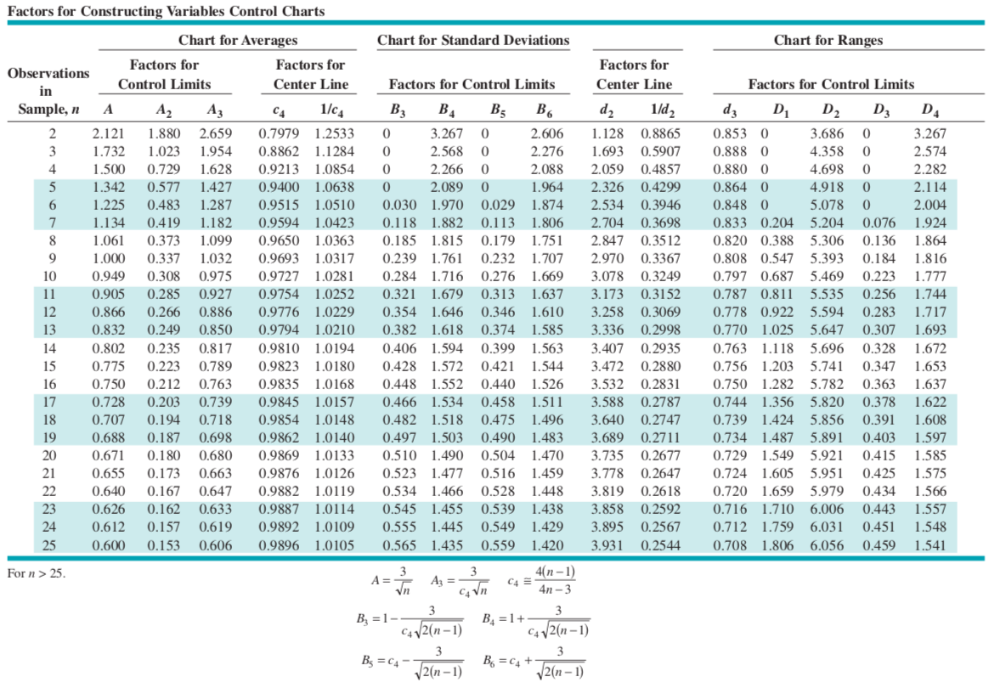

Bölüm 27 Ekler
Relative range: \(W=\frac{R}{\sigma}\), \(E(W)=d_{2}\)
Unbiased estimator of \(\sigma\) of a normal dist.:

\(n\geq10\), the range loss efficiency rapidly
\(n\leq6\) works very well
27.1 Ölçülebilir Değişkenler için Kontrol Grafiği Faktör Tablosu

27.2 Standart Normal Dağılım Tablosu